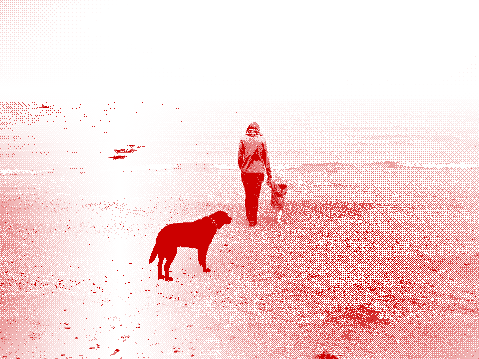

Fisk Solar

15/08/2019 Off-cloud Webserver Part 3
03/08/2019 Off-cloud Webserver Part 2
02/08/2019 Off-cloud Webserver Part 1
03/07/2019 Sleeping babies
27/06/2019 Meallach's Grave, Arran
26/06/2019 Druid Auchencar, Arran
25/06/2019 Machrie Moor Standing Stones, Arran
24/06/2019 Brodick 'Deer Park' Standing Stones, Cladach, Arran
29/05/2019 Hexagrams
26/05/2019 'Cairn Circle'
05/05/2019 Summit Tunnel Fire. December 20th 1984
28/04/2019 Gaddings Dam, Todmorden. First Swim 1987
27/04/2019 Walsden TV Relay Tower, Stones Lane/Watty Lane, Todmorden
20/04/2019 Cop Stone, Askham Fell, Cumbria
18/04/2019 Helton, Cumbria
14/04/2019 Stones Lane, Stones, Todmorden
03/04/2019 Series Three
05/03/2019 Series Two
15/01/2019 Series One